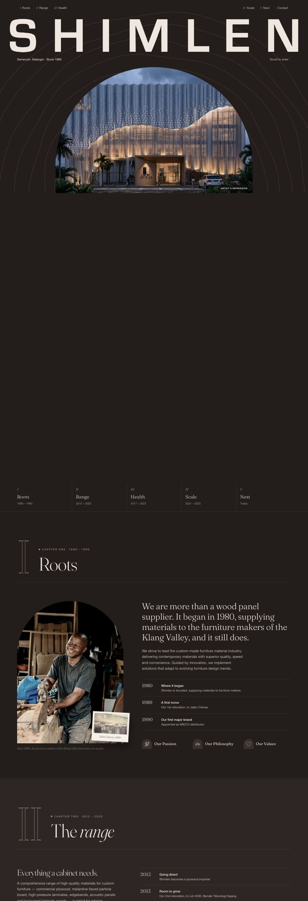
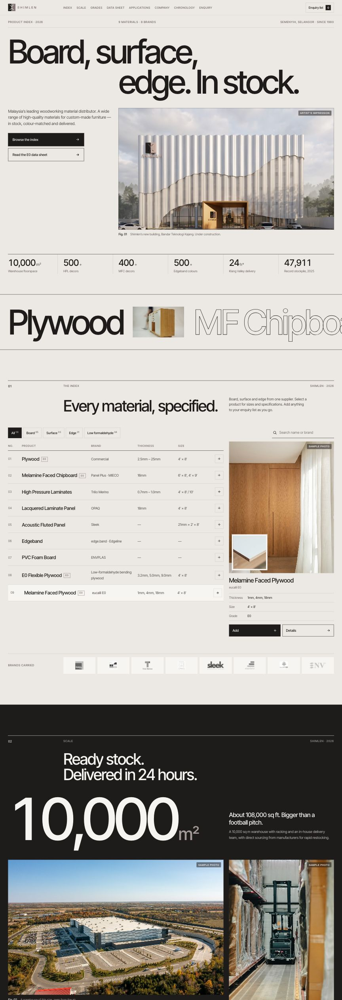
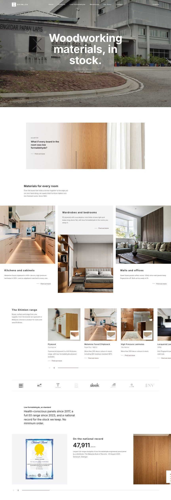
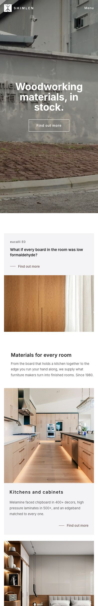

Eight ways the new Shimlen website could look.
Every design carries the same words, products and facts. What changes is how the story is told. The four revamped designs come first; the four originals they grew from follow after. Each one is named, shown on a computer and a phone, and paired with bigger brands that work the same way.


Daylight
Light, calm and story-first, like being shown round by someone who knows the place.
- The logo draws itself in on a warm screen, then the new building turns from dawn to dusk beside the words.
- An aerial photo opens to full width for 10,000 m², about 108,000 sq ft.
- Each room rises over the last as you read, and Board, Surface and Edge open as tall panels.
Bigger brands that work this way
ApplePictures that hold still while the words scroll past, and photos that open to full screen. EGGERA board maker writing for the same carpenters and designers, in plain, calm language.

Chronicle
Dark walnut and cream, told as a book in five chapters: Roots, Range, Health, Scale and Next.
- Tree rings draw in, the SHIMLEN wordmark shrinks into the menu bar and an arch opens onto the new building at night.
- Point at a product name and its picture appears in an arch on the right.
- Chapter IV opens onto Shimlen’s own warehouse, in its own photographs: 10,000 m² under one roof.
Bigger brands that work this way
Cartier · “Cartier in Time”The house’s history as one long scroll through time, on dark pages. Audemars Piguet × GQA story you move through like a film, one scene at a time.

Index
A working catalogue for people who specify boards: every product in one numbered, searchable index.
- Filter by Board, Surface, Edge or low formaldehyde, or search by name or brand.
- Add products to an enquiry list that fills in the contact form for you.
- Numbered sections like a printed catalogue, with a data sheet for eucalli E0 and a picture for every year.
Bigger brands that work this way
KvadratFilters by specification, technical data on every product, and free samples to order. VitraProduct pages with planning data and downloads for architects. Formica“Order free sample” on its laminates, the same idea as the enquiry list.

Moodboard
Young, bright and hands-on: decors to play with, rooms to swipe through, one big number for scale.
- Boards in eight decors stack up on the opening screen, then fly out.
- Rooms slide past sideways, and a wall of decors changes as you point.
- 10,000 m² lands huge over the warehouse, then 45 years to flip through like an album.
Bigger brands that work this way
EGGER · Virtual Design StudioTry decors in room scenes, the same idea as the decor wall. IKEARooms first, with the products shown inside them.

Linen
Bright and airy: soft taupe panels, fine guide lines and rounded cards, with a statement that fills in as you read.
- Shimlen’s own photos and films throughout.
- Rounded cards for products, rooms and the record.
- A calm, even rhythm from top to bottom.
Bigger brands that work this way
AppleRounded tiles, lots of space, and short, big statements.

Walnut
Dark walnut and cream with serif headings. The SHIMLEN wordmark sits over an arch that opens into the drone film as you scroll.
- Tree-ring line art behind the opening.
- The drone film of the site through the arch.
- Warm, heavy and quiet, like a well-made cabinet.
Bigger brands that work this way
Cartier · “Cartier in Time”Heritage on dark pages, revealed as you scroll.

Gridline
Clean and editorial: large, tight type on a strict, even grid, warm off-white and stone, with a full-width wordmark to close.
- Everything lines up to one twelve-column grid.
- Big type does the work; pictures are framed like plates in a book.
- The SHIMLEN wordmark runs edge to edge at the end.
Bigger brands that work this way
VitraA furniture maker with a clean grid and plenty of product detail.

Showreel
A full film with one line over it, then rooms and words that interlock, a range slider and a dotted timeline.
- Opens on Shimlen’s own film, full screen.
- Rooms and words fit together like a puzzle.
- The range slides sideways, and the years run along a dotted line.
Bigger brands that work this way
FinsaThe Spanish board maker this layout followed.
